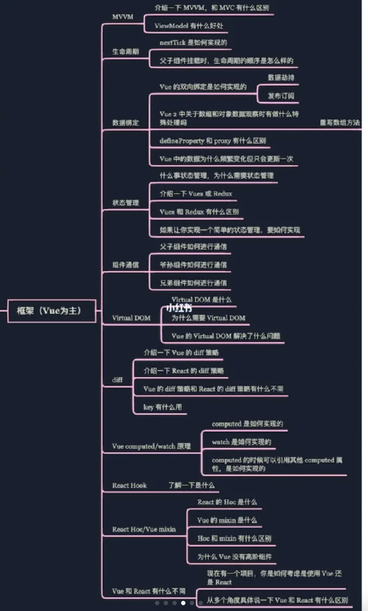

是一个软件架构设计模式
Model-View-ViewModel的简写，是M-V-VM三部分组成.
是一个软件架构设计模式
Model-View-ViewModel的简写，是M-V-VM三部分组成.
是js框架 const vm = new Vue()
当数据更新了，在dom中渲染后，自动执行该函数，
Vue生命周期的created()钩子函数进行的DOM操作一定要放在Vue.nextTick()的回调函数中，原因是在created()钩子函数执行的时候DOM 其实并未进行任何渲染，而此时进行DOM操作无异于徒劳，所以此处一定要将DOM操作的js代码放进Vue.nextTick()的回调函数中。与之对应的就是mounted钩子函数，因为该钩子函数执行时所有的DOM挂载已完成。
总结来说，如果data是一个函数的话，这样每复用一次组件，就会返回一份新的data(类似于给每个组件实例创建一个私有的数据空间，让各个组件实例维护各自的数据)。
当使用组件时，我们希望vue组件中的data数据都是互相隔离互不影响的。组件每复用一次，data数据就应该被复制一次。当我们将组件中的data写成一个函数，数据以函数返回值形式定义。这样每复用一次组件，就会返回一份新的data，拥有自己的作用域。
但是当我们组件的data单纯的写成对象形式，这些实例用的是同一个构造函数，由于JavaScript的特性所导致，所有的组件实例共用了一个data，就会造成一个变了全都会变的结果。
keep-alive文档 设计有A、B、C三个页面，试想这样一个场景需求：
keep-alive 包裹动态组件时，会缓存不活动的组件实例，而不是销毁它们。和 transition 相似，keep-alive 是一个抽象组件：它自身不会渲染一个 DOM 元素，也不会出现在父组件链中。
当组件在 <keep-alive> 内被切换，它的 activated 和 deactivated 这两个生命周期钩子函数将会被对应执行。
data () {
food: 0
},
watch: {
// 第一种方式：监听整个对象，每个属性值的变化都会执行handler
// 注意：属性值发生变化后，handler执行后获取的 newVal 值和 oldVal 值是一样的
food: {
// 每个属性值发生变化就会调用这个函数
handler(newVal, oldVal) {
console.log('oldVal:', oldVal)
console.log('newVal:', newVal)
},
// 立即处理 进入页面就触发
immediate: true,
// 深度监听 属性的变化
//对象和数组都是引用类型，引用类型变量存的是地址，地址没有变，所以不会触发watch。这时我们需要进行深度监听，就需要加上一个属性 deep，值为 true
deep: true
},
// 第二种方式：监听对象的某个属性，被监听的属性值发生变化就会执行函数
// 函数执行后，获取的 newVal 值和 oldVal 值不一样
'food.name'(newVal, oldVal) {
console.log('oldVal:', oldVal) // 冰激凌
console.log('newVal:', newVal) // 棒棒糖
}
}
单向绑定 v-bind: 双向绑定 v-model@ 事件绑定 v-on:click="methods"
<div
class="static"
:class="{ active: isActive, 'text-danger': hasError }"
></div>
active和‘text-danger’都是类名，是否绑定分别取决于isActive和hasError的布尔值
绑定的对象并不一定需要写成内联字面量的形式，也可以直接绑定一个对象：
<div :class="classObject"></div>
data() {
return {
classObject: {
active: true,
'text-danger': false
}
}
}
我们也可以绑定一个返回对象的计算属性。
data() {
return {
isActive: true,
error: null
}
},
computed: {
classObject() {
return {
active: this.isActive && !this.error,
'text-danger': this.error && this.error.type === 'fatal'
}
}
}
也可以绑定数组
<div :class="[activeClass, errorClass]"></div>
data() {
return {
activeClass: 'active',
errorClass: 'text-danger'
}
}
渲染的结果： <div class="active text-danger"></div>
也可以使用三元表达式
<div :class="[isActive ? activeClass : '', errorClass]"></div>
errorClass 会一直存在，但 activeClass 只会在 isActive 为真时才存在
因此也可以在数组中嵌套对象：
<div :class="[{ active: isActive }, errorClass]"></div>
<div :style="{ color: activeColor, fontSize: fontSize + 'px' }"></div>
data() {
return {
activeColor: 'red',
fontSize: 30
}
}
也可以
<div :style="{ 'font-size': fontSize + 'px' }"></div>
也能直接绑定一个样式对象
<div :style="styleObject"></div>
data() {
return {
styleObject: {
color: 'red',
fontSize: '13px'
}
}
}
也可以使用返回样式对象的计算属性
我们还可以给 :style 绑定一个包含多个样式对象的数组。这些对象会被合并后渲染到同一元素上：
<div :style="[baseStyles, overridingStyles]"></div>
是一个软件架构设计模式
Model-View-ViewModel的简写，是M-V-VM三部分组成.
它本质上是MVC的改进版本
能够实现前端开发和后端业务逻辑的分离，
关注model的变化，让MVVM框架利用自己的机制自动更新DOM，也就是所谓的数据-视图分离，数据不会影响视图。


常见的基于数据劫持的双向绑定有两种实现
Object.definePropertyProxy，而在Vue3.0版本后加入Proxy从而代替Object.defineProperty数据劫持: vue.js 则是采用数据劫持结合发布者-订阅者模式的方式，通过Object.defineProperty() 来劫持各个属性的 setter，getter，在数据变动时发布消息给订阅者，触发相应的监听回调。
/**
* 把一个对象的每一项都转化成可观测对象
* @param { Object } obj 对象
*/
function observable (obj) {
if (!obj || typeof obj !== 'object') {
return;
}
let keys = Object.keys(obj);
keys.forEach((key) =>{
defineReactive(obj,key,obj[key])
})
return obj;
}
/**
* 使一个对象转化成可观测对象
* @param { Object } obj 对象
* @param { String } key 对象的key
* @param { Any } val 对象的某个key的值
*/
function defineReactive (obj,key,val) {
let dep = new Dep();
Object.defineProperty(obj, key, {
get(){
dep.depend();
console.log(`${key}属性被读取了`);
return val;
},
set(newVal){
val = newVal;
console.log(`${key}属性被修改了`);
dep.notify() //数据变化通知所有订阅者
}
})
}
class Dep {
constructor(){
this.subs = []
}
//增加订阅者
addSub(sub){
this.subs.push(sub);
}
//判断是否增加订阅者
depend () {
if (Dep.target) {
this.addSub(Dep.target)
}
}
//通知订阅者更新
notify(){
this.subs.forEach((sub) =>{
sub.update()
})
}
}
Dep.target = null;
class Watcher {
constructor(vm,exp,cb){
this.vm = vm;
this.exp = exp;
this.cb = cb;
this.value = this.get(); // 将自己添加到订阅器的操作
}
get(){
Dep.target = this; // 缓存自己
let value = this.vm.data[this.exp] // 强制执行监听器里的get函数
Dep.target = null; // 释放自己
return value;
}
update(){
let value = this.vm.data[this.exp];
let oldVal = this.value;
if (value !== oldVal) {
this.value = value;
this.cb.call(this.vm, value, oldVal);
}
}
}
1. props/$emit
props: 从 父组件接受数据$emit: 向父组件传送数据// Father.vue -->
<Child :FatherMsg="data" @ListenChild="ListenChild"></Child>
//
import Child from './Child';
export default {
data() {
return {
data: 'I am your father',
ChildMsg: '',
}
},
components: {
Child
},
methods: {
ListenChild(data) {
console.log("子组件传递过来的值：" , data);
this.ChildMsg = data;
}
}
}
//
// Child.vue -->
<button @click="send">子组件将值传递给父组件</button>
export default {
data() {
return {
data: 'I am your children',
}
},
props: ['FatherMsg'],
methods: {
send() {
this.$emit('ListenChild', this.data);
}
}
}
2. ref 父组件调用子组件中的事件方法
// Child.vue -->
export default {
methods: {
childFun() {
console.log('我是子组件的方法 childFun');
this.msg = '我的方法被调用了'
},
},
}
// Father.vue -->
<Child ref="child" />
//
import Child from './Child';
export default {
components: {
Child
},
methods: {
handleClick() {
this.$refs.child.childFun();
},
},
}
//
除此之外，父组件还可以通过ref来引用和访问子组件。同样的，还可以使用$parent、$children、$root等 API 来分别获取父实例、子实例和根实例。 3. $parent / $child
this.$children 是一个数组类型，它包含所有子组件对象。父访问子
this.$parent 子访问父
$attrs
$listeners$attrs 与$listeners是两个对象，$attrs里存放的是父组件中绑定的非 Props 属性，$listeners 里存放的是父组件中绑定的非原生事件 //爷组件
<div id="app">
<Home :msg="msg"></Home>
</div>
//父组件(父组件的操作最简单，但不做就会传不过去)
<div class="home">
<Sun v-bind="$attrs"></Sun>
</div>
//孙组件
<div class="sun">
{{ msg }}
</div>
//props直接接受
props:{ msg:String, }
//
//爷组件
<div id="app">
<Home @setVal="setVal">></Home>
</div>
methods:{ setVal(val){ this.msg = val; } }
//父组件(父组件的操作最简单，但不做就会传不过去)
<div class="home">
<Sun v-on="$listeners"></Sun>
</div>
//孙组件
<div class="sun">
<button @click="toVal">点我</button>
</div>
methods:{ toVal(){ this.$emit("setVal",this.msg) } }
通过eventBus来做中间的桥梁，传输方通过中间组件调用 emit 传数据，接收方通过on 接受数据，两者之间的自定义属性名保持一致。
// 传输方组件调用方式
import Bus from '@/EventBus.js'
Bus.$emit('pass-value', this.say);
// 接收方接受参数
import Bus from '@/EventBus.js'
created() {
Bus.$on('pass-value', val => {
this.sibilingValue = val;
})
}

子组件能通过 this.$store.state 访问到
也可以使用mapState
// 在单独构建的版本中辅助函数为 Vuex.mapState
import { mapState } from 'vuex'
export default {
// ...
computed: mapState({
// 箭头函数可使代码更简练
count: state => state.count,
// 传字符串参数 'count'等同于 `state => state.count`
countAlias: 'count',
// 为了能够使用 `this` 获取局部状态，必须使用常规函数
countPlusLocalState(state) {
return state.count + this.localCount
}
})
}
与局部计算属性混合使用时用对象展开运算符
computed: {
localComputed () { /* ... */ },
// 使用对象展开运算符将此对象混入到外部对象中
...mapState({
// ...
})
}
Getter 接受 state 作为其第一个参数，也可以接受其他 getters 作为第二个参数
Getter 会暴露为 store.getters 对象，你可以以属性的形式访问这些值
const store = createStore({
state: {
todos: [
{ id: 1, text: '...', done: true },
{ id: 2, text: '...', done: false }
]
},
getters: {
doneTodos (state) {
return state.todos.filter(todo => todo.done)
}
}
})
你也可以通过让 getter 返回一个函数，来实现给 getter 传参。在你对 store 里的数组进行查询时非常有用。
getters: {
// ...
getTodoById: (state) => (id) => {
return state.todos.find(todo => todo.id === id)
}
}
store.getters.getTodoById(2) // -> { id: 2, text: '...', done: false }
mapGetters 辅助函数仅仅是将 store 中的 getter 映射到局部计算属性：
import { mapGetters } from 'vuex'
export default {
// ...
computed: {
// 使用对象展开运算符将 getter 混入 computed 对象中
...mapGetters([
'anotherGetter',
//如果你想将一个 getter 属性另取一个名字
doneCount: 'doneTodosCount',
// ...
])
}
}
每个 mutation 都有一个字符串的事件类型 (type)和一个回调函数 (handler)。接受 state 作为第一个参数
不能直接调用一个 mutation 处理函数。需要以相应的 type 调用 store.commit 方法
一条重要的原则就是要记住 mutation 必须是同步函数。
可以向 store.commit 传入额外的参数，即 mutation 的载荷（payload）：
mutations: {
increment (state, n) {
state.count += n
}
}
store.commit('increment', 10)
//在大多数情况下，载荷应该是一个对象，这样可以包含多个字段并且记录的 mutation 会更易读：
mutations: {
increment (state, payload) {
state.count += payload.amount
}
}
store.commit('increment', {
amount: 10
})
//另一种方式是直接使用包含 type 属性的对象
store.commit({
type: 'increment',
amount: 10
})
//在组件中提交 Mutation
// 1. this.$store.commit('xxx') 提交 mutation
// 2.使用 mapMutations 辅助函数将组件中的 methods 映射为 store.commit 调用（需要在根节点注入 store）。
import { mapMutations } from 'vuex'
export default {
// ...
methods: {
...mapMutations([
'increment',
// 将 `this.increment()` 映射为 `this.$store.commit('increment')`
// `mapMutations` 也支持载荷：
'incrementBy'
// 将 `this.incrementBy(amount)` 映射为 `this.$store.commit('incrementBy', amount)`
]),
...mapMutations({
add: 'increment'
// 将 `this.add()` 映射为 `this.$store.commit('increment')`
})
}
}
Action 提交的是 mutation，而不是直接变更状态。
Action 可以包含任意异步操作。
const store = createStore({
state: {
count: 0
},
mutations: {
increment (state) {
state.count++
}
},
actions: {
increment (context) {
context.commit('increment')
}
}
})
//实践中，我们会经常用到 ES2015 的参数解构来简化代码（特别是我 们需要调用 commit 很多次的时候）：
actions: {
increment ({ commit }) {
commit('increment')
}
}
// Action 通过 store.dispatch 方法触发：我们可以在 action 内部执行异步操作
actions: {
incrementAsync ({ commit }) {
setTimeout(() => {
commit('increment')
}, 1000)
}
}
// 以载荷形式分发
store.dispatch('incrementAsync', {
amount: 10
})
// 以对象形式分发
store.dispatch({
type: 'incrementAsync',
amount: 10
})
//组件中
import { mapActions } from 'vuex'
export default {
// ...
methods: {
...mapActions([
'increment',
// 将 `this.increment()` 映射为 `this.$store. dispatch('increment')`
// `mapActions` 也支持载荷：
'incrementBy'
// 将 `this.incrementBy(amount)` 映射为 `this. $store.dispatch('incrementBy', amount)`
]),
...mapActions({
add: 'increment'
// 将 `this.add()` 映射为 `this.$store.dispatch ('increment')`
})
}
}
// 假设 getData() 和 getOtherData() 返回的是 Promise
actions: {
async actionA ({ commit }) {
commit('gotData', await getData())
},
async actionB ({ dispatch, commit }) {
await dispatch('actionA') // 等待 actionA 完成
commit('gotOtherData', await getOtherData())
}
}
 TODO
TODO
组件生命周期 Vue2.x：
$el 属性仍不可用Vue3.x：
指令生命周期
Vue2.x： bind inserted update componentUpdated unbind
Vue3.x： beforeMount mounted beforeUpdate updated beforeUnmount unmounted
project
└───src
│ │ app.vue // 主页面
│ │ main.js // 主入口
| | router.js // 所有路由
│ │
│ |____assets // css、image、svg等资源
│ | |____css // 所有sass资源
| | | | reset.scss // 兼容各浏览器
| | | | global.scss // 全局css
| | | | variable.scss // sass变量和function等
│ | |____img // image图标库
| | |____svg // svg图标库
| |
| |____components // 组件
│ | |____common // common自注册组件
│ | |____base // 原子组件(如果是引入第三方，该文件夹可省略)
│ | | ... // 业务公用组件
│ | |____entity // entity页面组件
│ | |____about // about页面组件
| |
| |____pages // UI层(原则：轻page，重component)
| | |____entity
| | | | list.vue // 列表页
| | | | create.vue // 新增页
| | | | edit.vue // 修改页
| | | main.vue
| |
| |____plugins // 自己或第三方插件
| | | index.js // 插件入口文件
| | | directives.js // 所有Vue指令
| | | filters.js // 所有Vue过滤
| |
| |____server // 接口层
| | | index.js // 所有接口
| | | http.js // axios二次封装
| |
| |____store // vuex数据
| | | index.js
| |
| |____utils // 工具层
| | | config.js// 配置文件，包括常量配置
|
└───public // 公用文件，不经过webpack处理
│ │ favicon.ico
│ │ index.html
│ vue.config.js // vue-cli3主配置
│ babel.config.js// babel配置
│ .eslintrc.js // eslint配置
│ .prettierrc.js // perttier配置
│ package.json // npm配置
│ README.md // 项目说明
虚拟dom本质上是一个js对象，用来描述视图的界面结构，在vue中，每个组件都有一个render函数，每个render函数都会返回一个虚拟dom树，这意味着每个组件都对应着一颗虚拟dom树
render函数的作用就是返回一个虚拟dom，将该虚拟dom渲染成真实的dom
返回的参数是Vnode：即虚拟节点，也就是我们要渲染的节点
createElement是render函数返回的参数，它本身也是一个函数，并且有3个参数：
在vue中，渲染视图会调用render函数
这种渲染发生在
如果在渲染时，直接使用真实dom，由于真实dom的创建，更新，插入会带来大量的性能消耗，从而就会极大地降低渲染效率，因此，vue在渲染时，使用虚拟dom来替代真实dom主要是解决渲染效率的问题
每个组件实例首次被渲染时，首先会生成虚拟dom树，然后根据虚拟dom树创建真实dom，再把真实dom挂载到页面合适的地方，此时，每个虚拟dom树对应一个真实dom
当组件受响应式数据变化的影响，需要重新渲染，就会重新调用render函数，生成一个新的虚拟dom树，然后用新的虚拟dom树跟旧的虚拟dom树做比较，通过对比，vue会找到最小更新量，然后更新必要的虚拟dom节点，其中用于比较的算法就叫 Diff 算法
最后，这些更新过的虚拟dom节点，会去修改它们对应的真实dom，这样一来，就保证了真实dom的达到了最小的改动
当组件发生更新时会重新执行 render 方法生成新的 vnode 节点，而当 新旧 vnode 都是 一组节点 时，为了以最小的性能开销完成 更新操作，需要比较两组子节点，其中用于比较的算法就叫 Diff 算法。
新旧 两组子节点的更新时，去遍历新旧子节点中长度较短的一组，目的是为了尽可能多的调用 pacth 函数进行更新
理想状态 指新旧一组节点中 新旧节点前后位置没有发生变化.
在这个前提下新的一组节点可以比旧的一组子节点多、少或相等：
commonLengthcommonLength 作为循环结束的条件，通过 patch 函数对当前遍历到的 新旧 进行 pacth 更新操作commonLength 长度后的，就代表是属于其他多余的节点，这个多余的节点会根据 新旧 的具体情况进行不同的处理：
patch 函数进行挂载操作unmount 进行卸载操作非理想状态 指的是 新旧 一组子节点中相 同位置 的 节点不相同.
简单 diff 算法仍然会以 commonLength 进行遍历，并通过 patch(n1, n2) 的方式去更新
显然，简单 diff 算法下可通过减少 DOM 操作的次数，提升了一定的更新性能，但在非理想状态下，其更新方式和简单直接的更新方式一致：即卸载旧节点、挂载新节点，这意味着它仍然有被优化的空间。
上述算法的缺陷在于 非理想状态 的 diff 的过程仍然比较固定，即只能比较同位置的节点是否一致，那么优化的方式也是显而易见，只需要引入 key 用来标识 新旧一组子节点中 是否存在相同 key 的节点，若存在则复用 真实 DOM 节点，即更新和移动 DOM 节点即可。
同时对新旧两组子节点的两个端点进行比较的算法.
核心：
patch() 进行 更新
相当于先比较端点再进行key比较
Vue.js 3 借鉴了 ivi 和 inferno 这两个框架中使用的算法：快速 Diff 算法，这个算法的性能优于 Vue.js 2 中所采用的 双端 Diff 算法.
通过开启一个 while 循环，从前往后 依次遍历新旧两组子节点：
通过开启一个 while 循环，从后往前 依次遍历新旧两组子节点：
当完成 节点预处理 后，很可能出现以下两种情况，而这些剩余节点是很容易根据已处理过的前后节点推断出它们的具体位置的：
旧节点： [i ... e1 + 1] => a b [c d e] f g
新节点： [i ... e2 + 1] => a b [e d c h] f g
当前索引： i = 2, e1 = 4, e2 = 5
其中，经过 节点预处理 后的剩余节点，即 [c d e] 和 [e d c h] 的部分是乱序的，针对这部分节点的处理是很关键的：
toBePatched 保存新节点的数量，即 toBePatched = e2 - s2 + 1newChildren 的剩余节点，构造基一个形如 key: index 的 keyToNewIndexMap 索引映射，本质是一个 Map 对象vue2：vue2的双向数据绑定是利用ES5的一个API Object.defineProperty() 对数据进行劫持，结合发布订阅模式的方式来实现的。
vue3：vue3中使用了ES6的Proxy API对数据代理。使用proxy的优势如下：
vue2：vue2不支持碎片。
vue3：vue3支持碎片（Fragments），就是说可以拥有多个根节点。
vue2：vue2使用options api，选项型api在代码里分割了不同的属性
vue3：vue3使用Composition api，新的合成型api能让我们使用方法来分割，相比于旧的api使用属性来分组，这样代码会更加简便和整洁。提高可读性和可维护性
vue2：vue2是把数据放入data中，在vue2中定义数据变量是data(){}，创建的方法要在methods:{}中。
vue3：，vue3就需要使用一个新的setup()方法，此方法在组件初始化构造的时候触发。使用以下三个步骤来建立反应性数据：
<!DOCTYPE html>
<html lang="en">
<head>
<meta charset="UTF-8">
<meta http-equiv="X-UA-Compatible" content="IE=edge">
<meta name="viewport" content="width=device-width, initial-scale=1.0">
<title>input双向绑定</title>
</head>
<body>
<input type="text" id="input" />
<div id="box"></div>
<script>
let input = document.getElementById('input')
let box = document.getElementById('box')
var obj = {
targetValue:null
}
input.addEventListener('input', function (e) {
obj.targetValue = e.target.value
box.innerHTML=e.target.value
})
Object.defineProperty(obj, 'targetValue', {
get(val) {
return obj.targetValue = input.value
},
set(val) {
box.innerHTML=input.value = val
}
})
</script>
</body>
</html>
而Vue和React 解决了这一痛点，采用数据驱动视图方式，隐藏操作DOM的频繁操作。所以我们在开发时，只需要关注数据变化即可，但是二者实现方式不尽相同。
React与Vue都遵循组件化思想，它们把注意力放在UI层，将页面分成一些细块，这些块就是组件，组件之间的组合嵌套就形成最后的网页界面。
所以在开发时都有相同的套路，比如都有父子组件传递， 都有数据状态管理、前端路由、插槽等。
Vue与React都使用了 Virtual DOM + Diff算法
最后都是生成render函数，而render函数执行返回VNode(虚拟DOM的数据结构，本质上是棵树)。
react首先对新集合进行遍历，for( name in nextChildren)。
通过唯一key来判断老集合中是否存在相同的节点。
如果遍历的过程中，发现在新集合中没有，但在老集合中有的节点，会进行删除操作
vue2.x采用双端diff vue3.x 加上了预处理
Vue
React
// 1. 定义路由组件.
// 也可以从其他文件导入
const Home = { template: '<div>Home</div>' }
const About = { template: '<div>About</div>' }
// 2. 定义一些路由
// 每个路由都需要映射到一个组件。
// 我们后面再讨论嵌套路由。
const routes = [
{ path: '/', component: Home },
{ path: '/about', component: About },
]
// 3. 创建路由实例并传递 `routes` 配置
// 你可以在这里输入更多的配置，但我们在这里
// 暂时保持简单
const router = VueRouter.createRouter({
// 4. 内部提供了 history 模式的实现。为了简单起见，我们在这里使用 hash 模式。
history: VueRouter.createWebHashHistory(),
routes, // `routes: routes` 的缩写
})
// 5. 创建并挂载根实例
const app = Vue.createApp({})
//确保 _use_ 路由实例使
//整个应用支持路由。
app.use(router)
app.mount('#app')
// 现在，应用已经启动了！
$router和$route的区别$router是用来操作路由，$route是用来获取路由信息
通过调用 app.use(router)，我们可以在任意组件中以 this.$router 的形式访问它，并且以 this.$route 的形式访问当前路由：
this.$router 与直接使用通过 createRouter 创建的 router 实例完全相同。我们使用 this.$router 的原因是，我们不想在每个需要操作路由的组件中都导入路由。
$router使用//常规跳转连接方法
this.$router.push("/login");
//使用对象的形式 不带参数
this.$router.push({ path:"/login" });
//使用对象的形式，参数为地址栏上的参数
this.$router.push({ path:"/login",query:{username:"jack"} });
//使用对象的形式 ，参数为params 不会显示在地址栏
//但是要注意：如果提供了 path， params 会被忽略
this.$router.push({ name:'user' , params: {id:123} });
//在 history 记录中向前或者后退多少步，类似window.history.go(n)
this.$router.go(n)
//想要导航到不同的 URL，则使用 router.push 方法。这个方法会向 history栈添加一个新的记录，
//所以，当用户点击浏览器后退按钮时，则回到之前的 URL。
this.$router.push("/login");
//router.replace(location) 跟 router.push 很像，唯一的不同就是，它不会向 history添加新记录，而是跟它的方法名一样 —— 替换掉当前的 history 记录。
this.$router.replace(location)
params传参只能用name来引入路由，即push里面只能是name:’xxxx’,不能是path:’/xxx’,因为params只能用name来引入路由，如果这里写成了path，接收参数页面会是undefined！！！。query 传参使用 path 来引入路由。$route使用//主要的属性有：
//字符串，等于当前路由对象的路径，会被解析为绝对路径，如/home/ews
this.$route.path
//对象，包含路由中的动态片段和全匹配片段的键值对，不会拼接到路由的url后面
this.$route.params
//对象，包含路由中查询参数的键值对。会拼接到路由url后面
this.$route.query
//路由规则所属的路由器
this.$route.router
//当前路由的名字，如果没有使用具体路径，则名字为空
this.$route.name
//数组，包含当前匹配的路径中所包含的所有片段所对应的配置参数对象。
this.$route.matched
用Vue.directive来注册。
// 注册一个全局自定义指令 `v-focus`
Vue.directive('focus', {
// 当被绑定的元素插入到 DOM 中时……
inserted: function (el) {
// 聚焦元素
el.focus()
}
通过在组件内设置directives属性
directives: {
focus: {
// 指令的定义
inserted: function (el) {
el.focus()
}
}
}